This notebook details the approaches and the conclusions of how I approached verifying the results of an A/B Test. The test measured conversion rates when a website used custom language tamplates for spanish speaking countries compared to the same template (a Spain dialect translation) for all countries. We would think that custom templates would do better but that was not the case, the results point to the same template increasing conversions. So in this notebook I seek to see if the test can be trusted and if not what could be done differently for the next test.
This notebook covers:
- Data Cleaning
- Verifying Results
- Using Statistical Tools to test for Sample Bias
Conclusions:
- If the results seem unbelievable, they probably are. We intuitively know that a custom website for each region would yield better results. So when it didn’t it’s important to take extra precautions to make sure that the test was run appropriately, in this case we found that the test sample wasn’t indicative of the population
- The test was misleading because suffered from sample bias and a possible small sample size which needs to be addressed.
import numpy as np
import pandas as pd
import seaborn as sns
import matplotlib.pyplot as plt
from scipy.stats import ttest_ind
from scipy import stats
%matplotlib inlinefrom statsmodels.stats.weightstats import ttest_ind as sm_ttest
from statsmodels.stats.weightstats import zconfint as sm_confint
from sklearn.preprocessing import LabelEncoder, OneHotEncoder, LabelBinarizer
from sklearn.tree import DecisionTreeClassifier, export_graphviz, DecisionTreeRegressor
import matplotlib.pyplot as plt
import matplotlib.dates as mdates
import seaborn as sns
from pylab import rcParams
from pydotplus import graph_from_dot_data
from IPython.display import Image
np.set_printoptions(precision=2)
pd.set_option('precision',2)test_df = pd.read_csv('test_table.csv')
user_df = pd.read_csv('user_table.csv')test_df.head()| user_id | date | source | device | browser_language | ads_channel | browser | conversion | test | |
|---|---|---|---|---|---|---|---|---|---|
| 0 | 315281 | 2015-12-03 | Direct | Web | ES | NaN | IE | 1 | 0 |
| 1 | 497851 | 2015-12-04 | Ads | Web | ES | IE | 0 | 1 | |
| 2 | 848402 | 2015-12-04 | Ads | Web | ES | Chrome | 0 | 0 | |
| 3 | 290051 | 2015-12-03 | Ads | Mobile | Other | Android_App | 0 | 1 | |
| 4 | 548435 | 2015-11-30 | Ads | Web | ES | FireFox | 0 | 1 |
test_df.info()<class 'pandas.core.frame.DataFrame'>
RangeIndex: 453321 entries, 0 to 453320
Data columns (total 9 columns):
user_id 453321 non-null int64
date 453321 non-null object
source 453321 non-null object
device 453321 non-null object
browser_language 453321 non-null object
ads_channel 181877 non-null object
browser 453321 non-null object
conversion 453321 non-null int64
test 453321 non-null int64
dtypes: int64(3), object(6)
memory usage: 31.1+ MBuser_df.head()| user_id | sex | age | country | |
|---|---|---|---|---|
| 0 | 765821 | M | 20 | Mexico |
| 1 | 343561 | F | 27 | Nicaragua |
| 2 | 118744 | M | 23 | Colombia |
| 3 | 987753 | F | 27 | Venezuela |
| 4 | 554597 | F | 20 | Spain |
user_df.info()<class 'pandas.core.frame.DataFrame'>
RangeIndex: 452867 entries, 0 to 452866
Data columns (total 4 columns):
user_id 452867 non-null int64
sex 452867 non-null object
age 452867 non-null int64
country 452867 non-null object
dtypes: int64(2), object(2)
memory usage: 13.8+ MBSteps:
- Join the Tables on the common column user_id
- Check for Null Values
- Deal with Null Values
1.join data
# check the two tables uniqueness
print('Test ID:\t', len(test_df['user_id'].unique()), '\t', len(test_df['user_id'].unique()) == len(test_df))
print('User ID:\t', len(user_df['user_id'].unique()), '\t', len(user_df['user_id'].unique()) == len(user_df)) Test ID: 453321 True
User ID: 452867 Truedata = test_df.join(user_df.set_index('user_id'), on='user_id', how='left')data.info()<class 'pandas.core.frame.DataFrame'>
RangeIndex: 453321 entries, 0 to 453320
Data columns (total 12 columns):
user_id 453321 non-null int64
date 453321 non-null object
source 453321 non-null object
device 453321 non-null object
browser_language 453321 non-null object
ads_channel 181877 non-null object
browser 453321 non-null object
conversion 453321 non-null int64
test 453321 non-null int64
sex 452867 non-null object
age 452867 non-null float64
country 452867 non-null object
dtypes: float64(1), int64(3), object(8)
memory usage: 41.5+ MB2. check null value
np.sum(data.isnull())user_id 0
date 0
source 0
device 0
browser_language 0
ads_channel 271444
browser 0
conversion 0
test 0
sex 454
age 454
country 454
dtype: int64- There are null values in 3 columns: sex, age, country, and ads channel
- We will delete the rows with null values for sex, age and country because it’s so few.
- Since there are so many missing values for ads_channel we will fill create a different colum that raises a 1 when it’s a null value and a 0 when it’s not.
- We will investigate the ads_channel to determine whether to erase it or not.
3. dealing with null values
data[data.sex.isnull()].head()| user_id | date | source | device | browser_language | ads_channel | browser | conversion | test | sex | age | country | |
|---|---|---|---|---|---|---|---|---|---|---|---|---|
| 819 | 657841 | 2015-12-02 | Ads | Mobile | ES | Bing | Android_App | 0 | 0 | NaN | NaN | NaN |
| 1696 | 859340 | 2015-12-04 | Direct | Mobile | EN | NaN | Android_App | 0 | 0 | NaN | NaN | NaN |
| 1934 | 716487 | 2015-12-04 | SEO | Mobile | ES | NaN | Android_App | 0 | 0 | NaN | NaN | NaN |
| 2409 | 87209 | 2015-12-01 | Direct | Web | ES | NaN | Chrome | 0 | 0 | NaN | NaN | NaN |
| 2721 | 771642 | 2015-11-30 | SEO | Mobile | ES | NaN | Android_App | 0 | 0 | NaN | NaN | NaN |
The missing values for sex,age, and country are all the same 454 rows so we will get rid of them
data = data.iloc[data.index.difference(data[data.sex.isnull()].index)]data['ads_channel_is_null'] = [1 if i == True else 0 for i in data.ads_channel.isnull()]np.sum(data.isnull())user_id 0
date 0
source 0
device 0
browser_language 0
ads_channel 271174
browser 0
conversion 0
test 0
sex 0
age 0
country 0
ads_channel_is_null 0
dtype: int64First question: check test results.
But even before that, let’s make sure it is true Spain coverts much better than rest of LatAm countries
# First check that Spain converts much better than the rest of LatAm countries
groupby_country = data[data['test'] == 0][['conversion', 'country']].groupby('country').mean()
groupby_country = groupby_country.reset_index()
groupby_country = groupby_country.sort_values('conversion', ascending=False)
# Visualization
fig, ax = plt.subplots(figsize=(18, 6))
sns.barplot(x='country', y='conversion', data=groupby_country, ax=ax)
plt.show()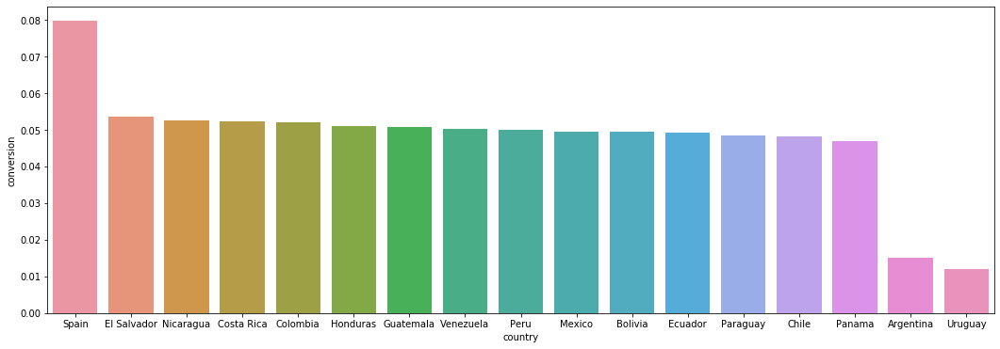
# Visualization
fig, ax = plt.subplots(figsize=(18, 6))
sns.barplot(x='country', y='conversion', hue='test', data=data, ax=ax)
plt.show()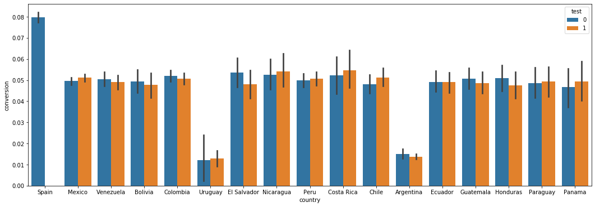
# A/B test
data = data[data['country'] != 'Spain']
test_val = data[data['test'] == 1]['conversion'].values
cont_val = data[data['test'] == 0]['conversion'].values
print(test_val.mean(), '\t', cont_val.mean())0.043411161678422794 0.04829179055749524print(ttest_ind(test_val, cont_val, equal_var=False))Ttest_indResult(statistic=-7.353895203080277, pvalue=1.9289178577799033e-13)Mmh..not in the test are converting at 4.8% while users in the test just at 4.3%.That’s a 10% drop, which should be dramatic if it were true. The most likely reason for weired A/B test results are:
- we didn’t collect enough data
- some bias has been introduce in the experiment so that test/control people are not really random
Firstly, let’s plot day by day, to see if these weird results have been constantly happening or they just started happening all of a sudden
data.loc[:,'date'] = pd.to_datetime(data.loc[:,'date'])
data_test_by_day = pd.DataFrame(data[data.test==1].groupby('date').mean()['conversion']/data[data.test==0].groupby('date').mean()['conversion'])
data_test_by_day.columns = ['test_vs_control']
plt.plot(data_test_by_day.index, data_test_by_day.test_vs_control);
plt.gca().xaxis.set_major_locator(mdates.DayLocator());
plt.gca().xaxis.set_major_formatter(mdates.DateFormatter('%b %d'));
plt.xlabel('date');
plt.ylabel('test_vs_control');
plt.title('Test Conversion in Relation to Control Conversion')C:\Users\Naixin\Anaconda3\lib\site-packages\pandas\plotting\_converter.py:129: FutureWarning: Using an implicitly registered datetime converter for a matplotlib plotting method. The converter was registered by pandas on import. Future versions of pandas will require you to explicitly register matplotlib converters.
To register the converters:
>>> from pandas.plotting import register_matplotlib_converters
>>> register_matplotlib_converters()
warnings.warn(msg, FutureWarning)
Text(0.5, 1.0, 'Test Conversion in Relation to Control Conversion')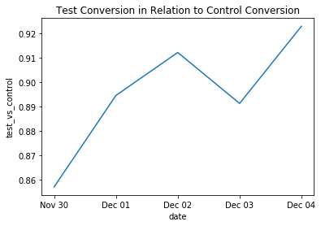
From this plot, we notice a couple of things:
- The Control sample consistently under-performs throughout the 5 days
- It is trending upward which could be a sign that the a/b test was for too short a time span
To prove if the test was valid we can check for two things:
- Small Sample Size
- Sample Bias
We already saw that the test ran for 5 days in which the test sample was beginning to trend upwards, so that could be the culprit. However, we cannot know so we can look to bias get a further understanding.
For the a/b test to be valid, both the control and test sample have to be the same except for the one feature. If they are not then the effect of another feature could of caused the change in conversion. So here we will use three tools:
- We will plot the distributions of each feature in for the test and control
- We will use a decision tree to see if any feature can predict whether a data point is in a test or control (it shouldn’t!)
- We will use a t-test to verify results
1. Distribution of Columns in Relation to Test or Control Sample
# Let's look at each feature's conversion in relation
#to whether it's a test or control sample
for i in data.columns.difference(['user_id', 'test']):
sns.factorplot(i, data = data, kind = 'count', col = 'test', size = 5, aspect = 1.5)
plt.title(i)C:\Users\Naixin\Anaconda3\lib\site-packages\seaborn\categorical.py:3666: UserWarning: The `factorplot` function has been renamed to `catplot`. The original name will be removed in a future release. Please update your code. Note that the default `kind` in `factorplot` (`'point'`) has changed `'strip'` in `catplot`.
warnings.warn(msg)
C:\Users\Naixin\Anaconda3\lib\site-packages\seaborn\categorical.py:3672: UserWarning: The `size` paramter has been renamed to `height`; please update your code.
warnings.warn(msg, UserWarning)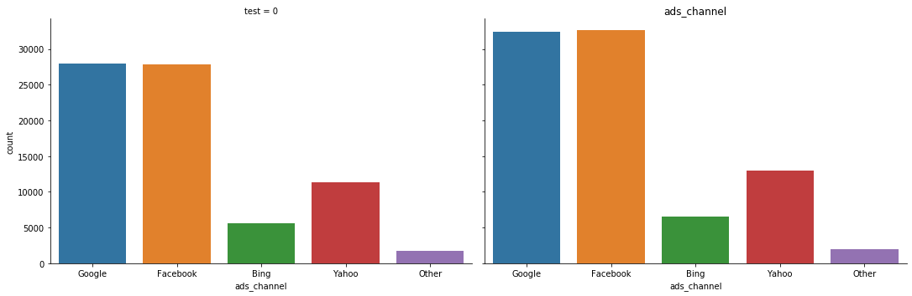
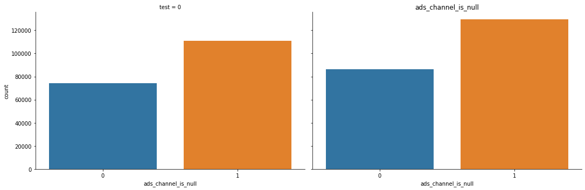
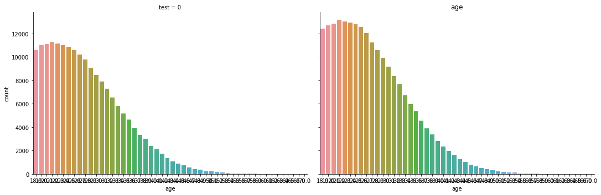
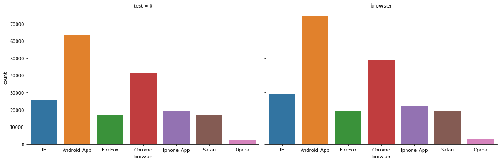
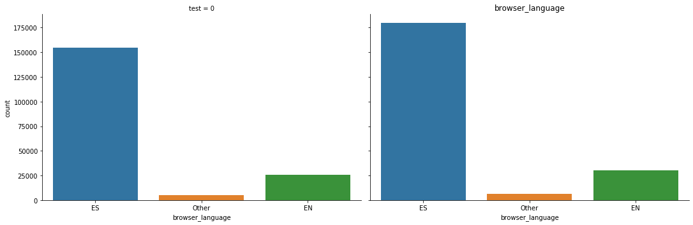
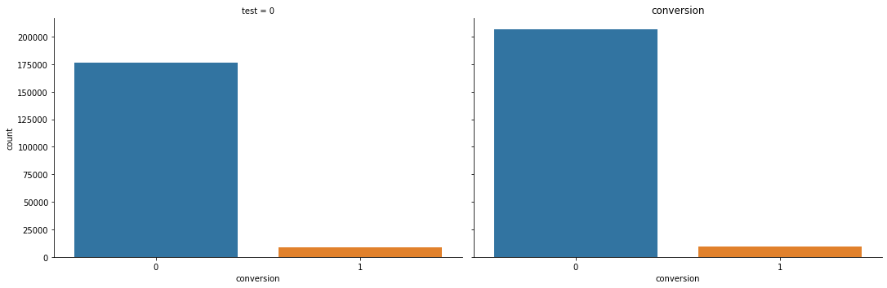
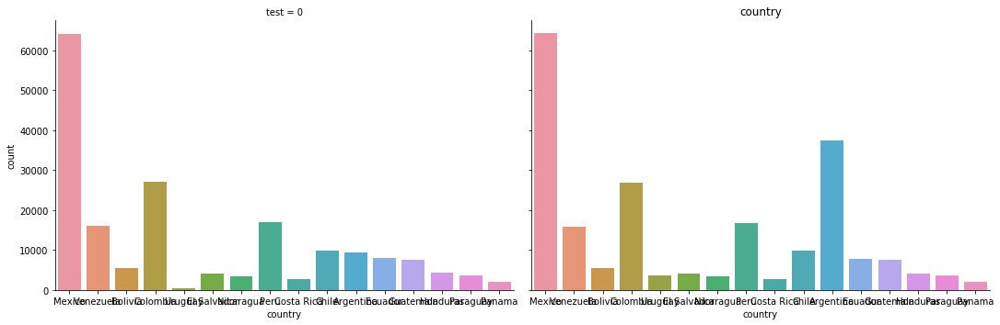
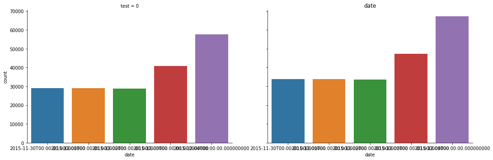
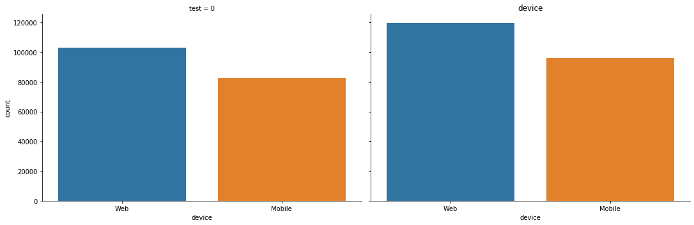
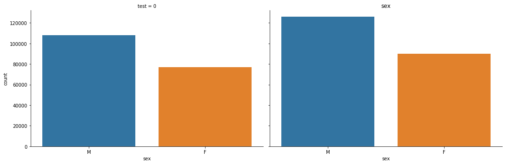
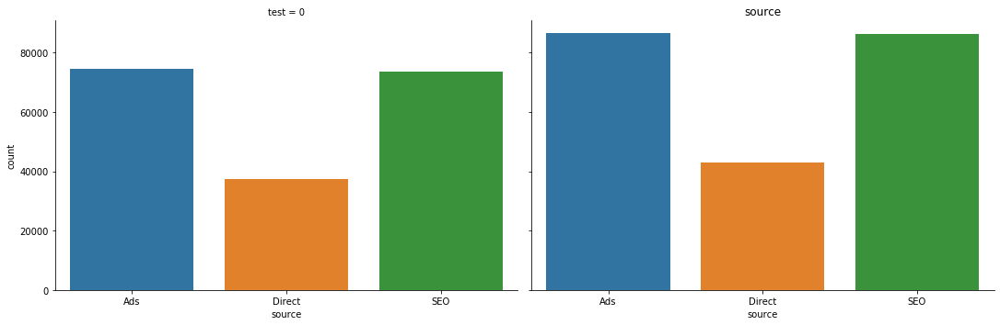
- There is no clear difference between the control and test sample for each features
- There seem to make small differences between age and countries but it’s not definite.
- The new feature we made for the null values seems to have no effect.
2. Training a Model To Test for Bias
Here we will use a random forrest classifier to see if any features become significant in predicting whether a data point is in a test or control sample. We will make the test column the dependent variable and the rest of the features conversion as independent variables.
This process can be fully automated in the future and give a warning when an a/b test may contain sample bias!
# Create a New Dataframe without the conversion column
tree_df = data[data.columns.difference(['conversion'])].copy()# Create dummy variables for categorical values
ads_channel_dums = pd.get_dummies(tree_df.ads_channel, prefix= 'ads')
browser_dums = pd.get_dummies(tree_df.browser,prefix= 'browser')
browser_language_dums = pd.get_dummies(tree_df.browser_language,prefix= 'browser_language')
country_dums = pd.get_dummies(tree_df.country,prefix= 'country')
device_dums = pd.get_dummies(tree_df.device,prefix= 'device')
sex_dums = pd.get_dummies(tree_df.sex,prefix= 'sex')
source_dums = pd.get_dummies(tree_df.source,prefix= 'source')
dums_list = [ads_channel_dums, browser_dums,browser_language_dums,country_dums,device_dums,sex_dums,source_dums ]# Training the Tree
from sklearn.tree import DecisionTreeClassifier
X = tree_df[['age']].join(dums_list)
y = tree_df['test']
tree = DecisionTreeClassifier()
tree.fit(X, y)DecisionTreeClassifier(class_weight=None, criterion='gini', max_depth=None,
max_features=None, max_leaf_nodes=None,
min_impurity_decrease=0.0, min_impurity_split=None,
min_samples_leaf=1, min_samples_split=2,
min_weight_fraction_leaf=0.0, presort=False,
random_state=None, splitter='best')features_significance| features | importance | |
|---|---|---|
| 16 | country_Argentina | 0.21 |
| 30 | country_Uruguay | 0.04 |
| 35 | sex_M | 0.04 |
| 34 | sex_F | 0.04 |
| 13 | browser_language_EN | 0.03 |
| 3 | ads_Google | 0.02 |
| 14 | browser_language_ES | 0.02 |
| 15 | browser_language_Other | 0.02 |
| 5 | ads_Yahoo | 0.02 |
| 29 | country_Peru | 0.02 |
| 31 | country_Venezuela | 0.02 |
# ploting
features_significance = pd.DataFrame({'features': X.columns,\
'importance': tree.feature_importances_}).sort_values('importance', ascending = False).iloc[1:11]
_ = sns.barplot(x = 'features', y = 'importance'
,data = features_significance, orient = 'v')
_.figure.set_size_inches(25,10)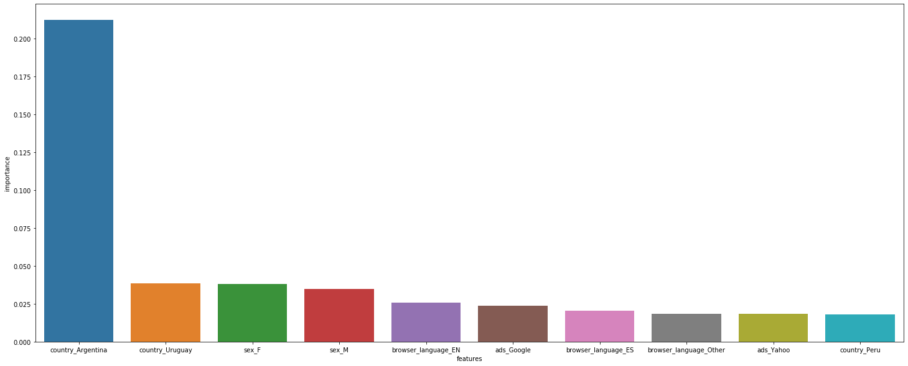
- There is one very predictive features: whether country is Argentina
- This is a signal for bias so we can verify with T-tests
3. using T-tests to verify results
Approach:
We will then verify the power of these features by running t-tests on country
We will conclude that there is bias in the data if the data comes back non-significant for the features
##1. Running T-Test
country = []
conversion_test = []
conversion_control = []
ttest_vals=[]
p_vals = []
for i in data.country.value_counts().index:
temp = data[data.country == i]
cat1 = temp[data.test == 1].conversion
cat2 = temp[data.test == 0].conversion
ttest, p =stats.ttest_ind(cat2, cat1)
country.append(i)
conversion_test.append(cat1.sum()/float(len(cat1)))
conversion_control.append(cat2.sum()/float(len(cat2)))
ttest_vals.append(ttest)
p_vals.append(p)
pd.DataFrame({'country': country,
'conversion_test': conversion_test,
'conversion_control': conversion_control,
'p_value': p_vals})\
[['country', 'p_value', 'conversion_test', 'conversion_control']]C:\Users\Naixin\Anaconda3\lib\site-packages\ipykernel_launcher.py:9: UserWarning: Boolean Series key will be reindexed to match DataFrame index.
if __name__ == '__main__':
C:\Users\Naixin\Anaconda3\lib\site-packages\ipykernel_launcher.py:10: UserWarning: Boolean Series key will be reindexed to match DataFrame index.
# Remove the CWD from sys.path while we load stuff.| country | p_value | conversion_test | conversion_control | |
|---|---|---|---|---|
| 0 | Mexico | 0.17 | 0.05 | 0.05 |
| 1 | Colombia | 0.42 | 0.05 | 0.05 |
| 2 | Argentina | 0.32 | 0.01 | 0.02 |
| 3 | Peru | 0.77 | 0.05 | 0.05 |
| 4 | Venezuela | 0.57 | 0.05 | 0.05 |
| 5 | Chile | 0.30 | 0.05 | 0.05 |
| 6 | Ecuador | 0.96 | 0.05 | 0.05 |
| 7 | Guatemala | 0.57 | 0.05 | 0.05 |
| 8 | Bolivia | 0.72 | 0.05 | 0.05 |
| 9 | Honduras | 0.47 | 0.05 | 0.05 |
| 10 | El Salvador | 0.25 | 0.05 | 0.05 |
| 11 | Paraguay | 0.88 | 0.05 | 0.05 |
| 12 | Nicaragua | 0.78 | 0.05 | 0.05 |
| 13 | Costa Rica | 0.69 | 0.05 | 0.05 |
| 14 | Uruguay | 0.88 | 0.01 | 0.01 |
| 15 | Panama | 0.71 | 0.05 | 0.05 |
After control for country, the test clearly appears non-significant.Not a great success given that the goal was to impove conversion rate, but at least we know that a localized translation didn’t make things worse.
Conclusion
1. If the Results Seem Unbelievable, They Probably Are
- We intuitively know that a custom website for each region would yield better results. So when it didn’t it’s important to take extra precautions to make sure that the test was run appropriately, in this case we found that the test sample wasn’t indicative of the population
2. We can Automate This Process Using Machine Learning
- By building a model that can show us if any features can predict whether a user is in the test or control sample, we can automate the process. We can set a threshold for feature significance and let the model tell us automatically if the sample is biased or not! This gives us more time to deal with deeper subjects. 3. By simply looking at feature distributions, we miss the subtly of sample bias
- When we saw the distribution of features, all the features seemed balanced. There were a little discrepancies in country but aged seemed balanced. If we had not run T-test or the decision tree to prove statistical significance then we would of missed country as the major indicator of a biased data set. When running an A/B test, the quality of the test is just important if not more important than the results.
There are many ways to test bias but I’m going to try 2 here: a. Train a to see if it can predict whether it’s the test or control sample (if the sample is unbiased then no features should be predictive) b. : A t-test should reveal whether a feature’s effect on conversion is statistically significant